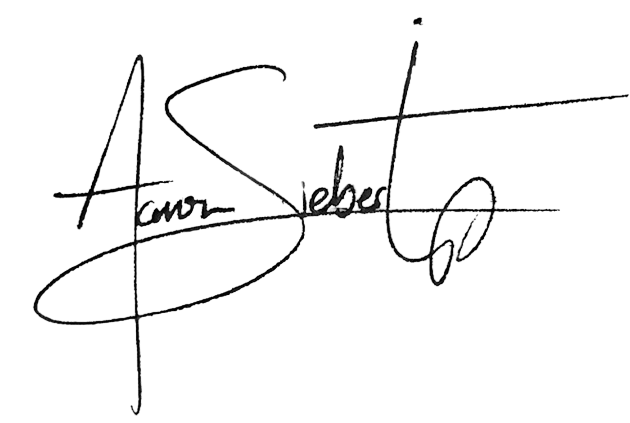

Aaron Siebert is a composer and pianist whose work exists at the intersection of film, modern classical, and ambient music. His approach is refined and contemplative, evoking the quiet elegance of a dim concert hall.
With a focus on texture, space, and cinematic storytelling, Siebert’s music invites listeners into a silent world illuminated by subtle harmony and resonance, drawing inspiration from both contemporary art and the tradition of the piano.
Each composition is crafted to hold a sense of stillness, depth, and intimacy — a musical conversation shaped by restraint. Siebert’s work is as much about what is left unsaid as it is about the notes themselves.
